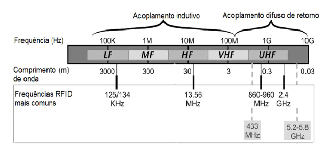
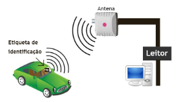

Os sistemas de RFID também podem ser definidos pela faixa de frequência em que operam:
 Disponível em:Para curta distância de leitura e baixos custos. Normalmente utilizado para controle de acesso, localização e identificação.
Disponível em:Para leitura em médias ou longas distâncias e leituras em alta velocidade. Normalmente utilizados para leitura de tags em veículos ou recolha automática de dados numa sequência de objectos em movimento. Um exemplo de aplicação é a via verde, sistema de pagamento electrónico da BRISA, Auto-estradas de Portugal.
 Disponível em:Frequência de operação: 125 kHz ou 134 kHz.
Alcance curto: geralmente, de 10 cm a 1 metro.
Comunicação indutiva: utiliza campos eletromagnéticos para transferir dados.
Protocolo comum: ISO 18000-2 (Também conhecido como EM4102).
Frequência de operação: 13,56 MHz.
Alcance médio: geralmente, de 1 metro a 1,5 metro.
Comunicação por acoplamento eletromagnético: utiliza campos elétricos e magnéticos para transferir dados.
Protocolos comuns: ISO 14443 (usado em cartões inteligentes e pagamentos sem contato) e ISO 15693 (usado em identificação de objetos e controle de acesso).
Frequência de operação: 860 MHz a 960 MHz.
Alcance longo: pode chegar a vários metros, dependendo da antena e das condições de operação.
Comunicação por ondas de rádio: utiliza modulação de amplitude ou modulação de fase para transmitir dados.
Além dos protocolos mencionados, também existem outros padrões de comunicação RFID, como o NFC (Near Field Communication), que opera na frequência de 13,56 MHz e é amplamente utilizado em dispositivos móveis para pagamentos sem contato e compartilhamento de informações em curta distância.
Cada protocolo de comunicação RFID tem suas características de alcance, velocidade de leitura/gravação, capacidade de armazenamento e compatibilidade. A escolha do protocolo adequado depende das necessidades específicas da aplicação em questão.
| Padrão RFID | Detalhe |
| ISO 10536 | Padrão ISO RFID para cartões de acoplamento próximo |
| ISO 14223 | Identificação por radiofrequência de animais - Transponder avançado |
| ISO 11784 | Padrão ISO RFID que define a forma como os dados são estruturados em uma tag RFID. |
| ISO 11785 | Padrão ISO RFID que define o protocolo de interface aérea. |
| ISO 14443 | Padrão ISO RFID que fornece as definições para protocolo de interface aérea para etiquetas RFID usadas em sistemas de proximidade - voltado para uso com sistemas de pagamento |
| ISO 15459 | Identificadores únicos para unidades de transporte (usados na gestão da cadeia de abastecimento) |
| ISO 15693 | Padrão ISO RFID para uso com os chamados cartões de proximidade |
| ISO 15961 | Padrão ISO RFID para gerenciamento de itens (inclui interface de aplicativo (parte 1), registro de construções de dados RFID (parte 2) e construções de dados RFID (parte 3). |
| ISO 15962 | Padrão ISO RFID para gerenciamento de itens - regras de codificação de dados e funções de memória lógica. |
| ISO 16963 | Padrão ISO RFID para gerenciamento de itens - identificador exclusivo da etiqueta RF. |
| ISO 18000 | Padrão ISO RFID para a interface aérea para frequências RFID em todo o mundo |
| ISO 18001 | RFID para gerenciamento de itens - perfis de requisitos de aplicação. |
| ISO 18046 | Etiqueta RFID e métodos de teste de desempenho do interrogador. |
| ISO 18047 | O padrão ISO RFID que define os testes, incluindo testes de conformidade de etiquetas e leitores RFID. Ele é dividido em várias partes que refletem as partes da ISO 18000. |
| ISO 18185 | Este é o padrão da indústria para selos eletrônicos ou “e-selos” para rastreamento de contêineres de carga usando as frequências de 433 MHz e 2.4 GHz. |
| ISO 18092 | Tecnologia da informação - Telecomunicações e troca de informações entre sistemas - Near Field Communication - Interface e Protocolo (NFCIP-1) |
| ISO 21481 | Tecnologia da informação - Telecomunicações e troca de informações entre sistemas - Near Field Communication Interface and Protocol -2 (NFCIP-2) |
| ISO 24710 | Tecnologia da informação, identificação automática e técnicas de captura de dados - RFID para gerenciamento de itens - Funcionalidade de placa de licença de etiqueta elementar para interface aérea ISO 18000. |
| ISO 24729 | Diretrizes de implementação de RFID - parte: etiquetas habilitadas para RFID; parte 2: reciclabilidade de etiquetas RF; parte 3: interrogador RFID / instalação da antena. |
| ISO 24730 | Sistema de localização RFID em tempo real: Parte 1: Interface de programação de aplicativo (API); Parte 2: 2.4 GHz; Parte 3: 433 MHz; Parte 4: Sistemas de localização global |
| ISO 24752 | Protocolo de gerenciamento de sistema para identificação automática e captura de dados usando RFID |
| ISO 24753 | Comandos de interface aérea para assistência de bateria e funcionalidade do sensor |
| ISO 24769 | Métodos de teste de conformidade de dispositivo do Sistema de Localização em Tempo Real (RTLS) |
| ISO 24770 | Métodos de teste de desempenho de dispositivo do Sistema de Localização em Tempo Real (RTLS) |
| ISO-28560 2 | Especifica os padrões de codificação e o modelo de dados a serem usados nas bibliotecas |
| ASTM D7434 | Método de teste padrão para determinar o desempenho de transponders de identificação de radiofrequência passiva (RFID) em cargas paletizadas ou unitizadas |
| ASTM D7435 | Método de teste padrão para determinar o desempenho de transponders de identificação de radiofrequência passiva (RFID) em recipientes carregados |
| ASTM D7580 | Método de teste padrão para método de empacotador extensível rotativo para determinar a legibilidade de transponders RFID passivos em cargas homogêneas paletizadas ou unificadas |